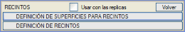
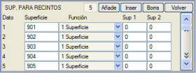
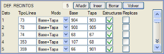
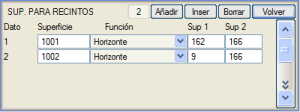
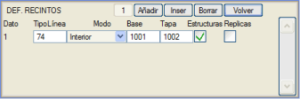
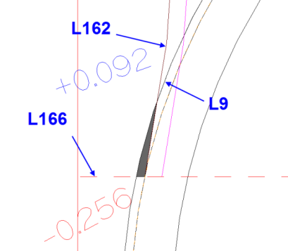

Buradan, taramalı çizgilerle renklendirmek üzere alanlar tanımlanır. Bunun için öncelikle alanlarda yer alacak yüzeyleri tanımlamak ve ardından bu alanları tanımlamak gerekir.
Program kütüphanesinde yer alan color.gut bilgi bandı, bu özelliğin kullanımına dair iyi bir örnektir.
Alanlar için Yüzeylerin Tanımlanması
Buradan, metraj sistemlerinin ( .dar tabloları) kullandığı aynı yöntemi izleyerek mevcut yüzeylerden yeni yüzeyler tanımlanır. Böylece, ilk sütunda programa oluşturulacak çizgi tipi (yüzey) ve ardından ilgili iki yüzey (Yüzey 1 ve Yüzey 2) arasında kullanılacak fonksiyon belirtilir.
Belirtilen çizgi tipi, enkesitlerde daha önce MEVCUT OLMAYAN bir tip olmalıdır, çünkü bu hatalara yol açacaktır. Yüzeyler arasında uygulanabilecek mevcut fonksiyonlar şunlardır:
- 1 Yüzey: Tanımlanan Yüzey, Yüzey 1 ile aynıdır.
- + Alçak: Bu durumda, Yüzey 1 ve Yüzey 2 yüzeyleri arasındaki en alçak yüzey, hem Yüzey 1 hem de Yüzey 2'nin aynı anda bulunduğu yerlerde veri içeren yeni bir Yüzey'dir ve bu durumda en alçak olanla çakışır.
- + Yüksek: Yüzey 1 ve Yüzey 2 yüzeyleri arasındaki en yüksek yüzey, sadece hem Yüzey 1 hem de Yüzey 2'nin aynı anda bulunduğu yerlerde veri içeren ve en yüksek olanla çakışan yeni bir Yüzey'dir.
- Kırp: Yüzey 1'in Yüzey 2 ile kırpılması sonucu oluşan yüzey, Yüzey 2'nin bulunduğu bölgelerde Yüzey 1 yüzeyiyle çakışan yeni bir Yüzey'dir.
- Tamamla: Yüzey 1'in Yüzey 2 ile tamamlanması sonucu oluşan Yüzey, Yüzey 1'in bulunduğu tüm bölgelerde onunla çakışan ve Yüzey 1'in bulunmadığı ancak Yüzey 2'nin bulunduğu bölgelerde Yüzey 2 ile çakışan yeni bir Yüzey'dir.
- Alt Kenar: Sonuçta ortaya çıkan Yüzey, mevcut tüm yüzeylerin tüm kotları arasındaki en düşük kotta bir yatay çizgidir.
- Üst Kenar: Sonuçta ortaya çıkan Yüzey, mevcut tüm yüzeylerin tüm kotları arasındaki en yüksek kotta bir yatay çizgidir.
- Kodları Gizle: Herhangi bir yüzeyden, kodu tanımlanacak iki değer arasında olan bir noktada biten segmentleri gizlemeyi sağlar. Yüzey tipinde, çizilecek enkesitlerde mevcut olanlardan birini belirteceğiz. Onunla herhangi bir alan tanımlamaya gerek yoktur. Örneğin: Çift hatlı Demiryolu enkesitlerinde, traversin arkasındaki 67 hattının segmentini gizlemek istiyoruz: Yüzey 67, Fonksiyon: Segmenti Gizle, Baş.Kod: 1, Bit.Kod: 3.
- x Altında: Yüzey sütununda, birinci yüzeyin ikinci yüzeyin altında kalan sadece o kısmından oluşan bir sonuç yüzeyi tanımlanır.
- x Üstünde: Yüzey sütununda, birinci yüzeyin ikinci yüzeyin üstünde kalan sadece o kısmından oluşan bir sonuç yüzeyi tanımlanır.
- Ufuk Çizgisi: a (Yüzey1) yüzeyini, ufuk çizgisi olarak kullanılan b (Yüzey2) yüzeyine karşı keser ve a'nın b'nin altında kalan uçlarını kaldırır (Tünel takibi için oluşturulan metraj tablolarının ufuk çizgisi fonksiyonuyla aynı). Aşağıda alanların tanımı bölümünde bir örnek görelim.
Alt Kenar ve Üst Kenar fonksiyonları, enkesitin alt ve üst kenarlarını tanımlamak için kullanılır.
Operasyonlar için: +Alçak, +Yüksek, xAltında, xÜstünde, Ufuk Çizgisi, Kırp, Tamamla, Alt Kenar, Üst Kenar durumlarında, eğer Yüzey sütununda tanımlanan yüzey için verilen tip zaten mevcutsa, o zaman yeni bir tane oluşturmak yerine bu yüzey değiştirilir. Bu, Enkesit Düzenleyici'deki Tamamla, Kırp, +Yüksek ve +Alçak operasyonlarıyla aynı şekilde gerçekleşir.
Alanların Tanımlanması
Buradan, enkesit çizgilerinden veya önceki alt menüde oluşturulanlardan alanlar tanımlanır. Bunun için taramalı çizgi tipleri (örnektekiler gibi) kullanılır ve mod aşağıdaki seçenekler arasından belirtilir:
- Taban+Tavan: Alan, iki yüzey (taban ve tavan) ile tanımlanır ve belirtilen çizgi tipiyle doldurulur.
- Kapalı: Bu durumda, belirtilen çizgi tipiyle doldurulacak kapalı bir yüzey (örneğin, tünel) belirtilir.
- İç: a (Taban) yüzeyinin b (Tavan) yüzeyinin içinde bıraktığı kısımdan oluşan bir alan oluşturur (Tünel takibi için oluşturulan metraj tablolarının I moduyla aynı).
Sanat Yapıları kutucuğunun işaretini kaldırarak, tanımlanan alanın sanat yapısı kesitlerinde oluşturulmamasını sağlayabiliriz.
Branş Yüzeyleri kutucuğunu seçerek, Branş Ekle ile oluşturulan güzergahları içeren bir dosyanın branş yüzeylerinde alan tanımını kullanabiliriz.
Örnek: Bir tünel takip enkesitinde İÇERİDE metrajını renklendirmek istiyoruz:
Önceki bölümde görülen Ufuk Çizgisi aracını kullanarak iki yüzey (1001 ve 1002) tanımlıyorum.

İÇERİDE alanını taramalı bir çizgi tipiyle (örneğin L74) tanımlıyorum.


|